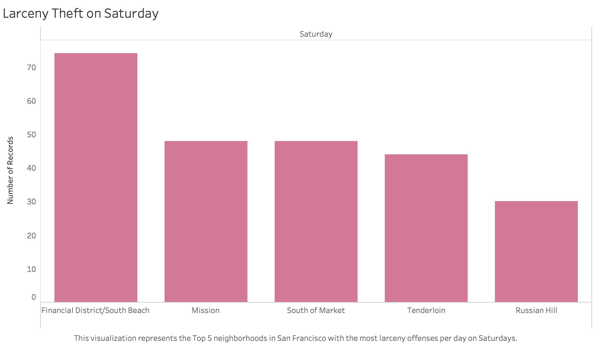
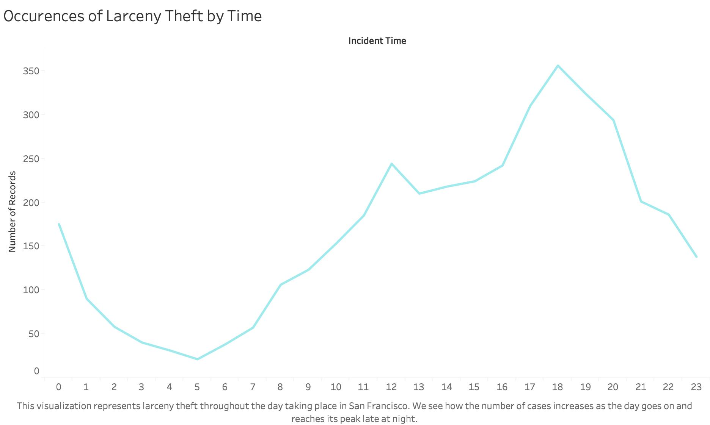
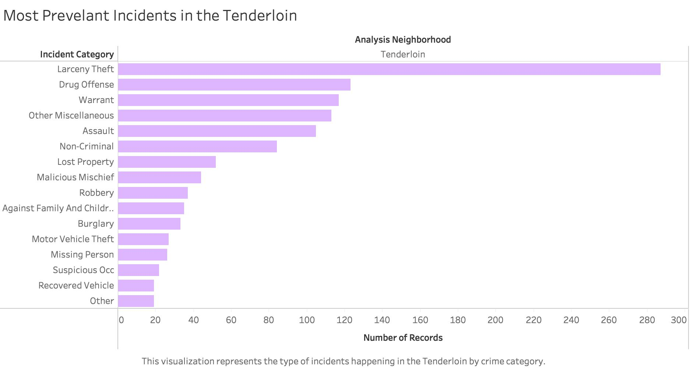

Data Visualizations
If appropriate, provide a brief discussion of how to interpret this visualization (e.g. how the data is encoded) and how to interact with this visualization. Some of this discussion may not be necessary depending on the legends provided with the visualization.
If appropriate, provide a brief discussion of the primary goal and findings of the visualization, any challenges encountered creating the visualization, and any other context as required by the assignment.
Inspiration from and credit to Scott Murray and d3noob.
Prototypes



Interpretation
Discussion
Credit
| Done? | Letter | Justification |
|---|---|---|
| D | Level Functionality Completed. Three prototypes were created. | |
| C | Level Functionality Completed. One of the prototypes created in D3. | |
| B | Level Functionality Completed. Two of the prototypes created in D3. | |
| A | Level Functionality Completed. Three of the prototypes created in D3. |
Any additional context you want to provide regarding functionality and grading can be included here. This may include any challenges or bugs you ran into that prevented you from implementing additional functionality.